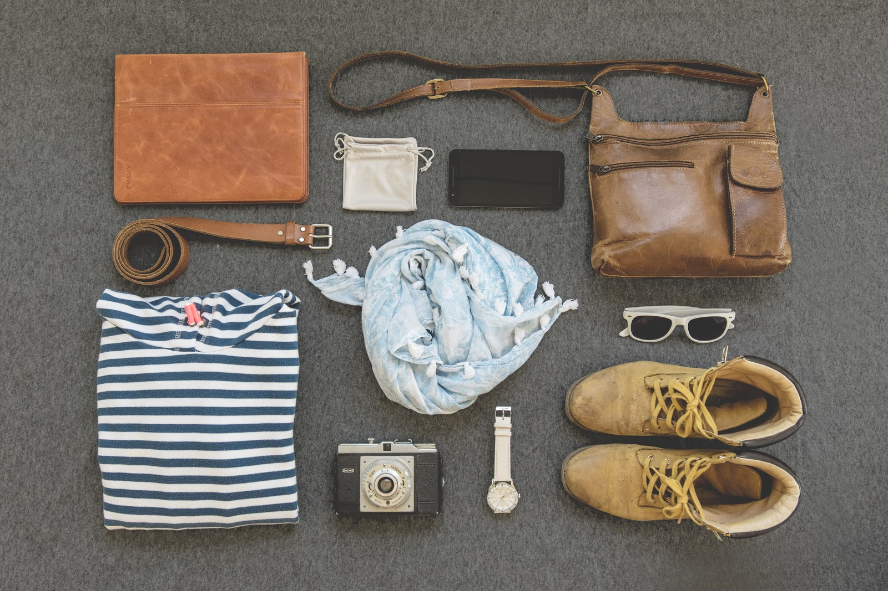

  <div class="page-container">
  <h1>Travel Hacks</h1>
  <h5>Tricks & Tools || Fix & Fuel</h5><br>

    <app-posts></app-posts>
    <br>
    <br>
    <app-comments></app-comments>

    <div class="list-group">

      <a *ngFor="let post of posts" href="#" class="list-group-item list-group-item-action flex-column align-items-start">
          <div class="d-flex w-100 justify-content-between">
              <h5 class="mb-1">{{post.title}}</h5>
              <br>
          </div>
          
          <p class="mb-1">{{post.description}}</p>
      </a>


        <button (click)="delete('row')">Delete</button>


    </div>

<!--
<div class="style-sheet">
    <h3>Tips to Travel Well </h3><br>

    <div>
    
    <p>
       1. Pack light
        The less you have in your bag, the less to carry around. Chances are you will not wear all of the clothes you think you need. Bring 2-3 pairs of bottoms to mix and match with 7 shirts for a weeks trip.You can always opt to bring cover up (cardigans, blazers) to switch it up + a couple pieces of jewelry.
        2.  TSA Pre-check is worth it!
        TSA pre-check last for 5 years and will allow you to fly through security. No need to take off shoes, remove jewelry, etc.
        3. Do not fold your clothes
        Always roll your clothes when packing or you can use Marie Kondo technique of folding. Watch (link ‘watch’ : https://youtu.be/NWCmeklWJug)  video on how to pack.
        4. Bring reusable water bottle
        plastic water bottle are not cheap at the airport! Unless you are planning a trip outside the USA use the water stations that are provided outside of the restrooms. I promise, you will not regret bring your reusable water bottle.

    </p><br>
    </div>
-->
